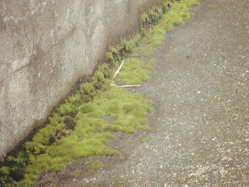
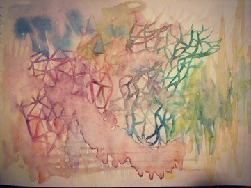

| 2014/07 10 Thu | 滲み細胞。583回目 |
新曲発売されました。
Type-Cは前回と同様
アンダー盤になります。
通常盤にもう一曲
僕が行かなきゃ誰が行くんだ？
Bには個人pvが収録されてます。
伊藤万理華×関和亮
関さんの作品
好きなので嬉しかった...
とても気さくで優しい方でした！
リズム感がないのでボイパは
不安でしたが、楽しかったです。
まーた歌かw
とか思わず聴いてみてください！
画面にまりっかが最大7人か8人？
登場します。パートは10個です！
なので10人のまりっかが見れる。
ひとつひとつの画面見ると
やってること、仕草や表情が違うので
面白いです。きっと面白いです。
どのまりっかが好きかなー
ちなみにいちばん
難しかったパートはベースです。
この個人pvで初めて見て
興味持った方は、
まりっか'17をおすすめします...←
でも、できれば全部見てほしい！
いろんなジャンル！

新番組「のぎ天」
楽天showtimeで
今週の金曜日から配信！
明日から！毎週金曜日です。
嬉しいー
この間出演した生放送CDET！
珍しくトーク番組に
出させていただきました...
みなさん優しくて面白くて
とてもリラックスしてました！
もっと元気にしゃべることが
できるように頑張ろう...
そしてFmYokohama Tresen＋
5枚目シングルぶり出演しましたー
光邦さんええ声...
どちらも苔について語ってしまった。
私はよくその辺に生えてる
ホソウリゴケやギンゴケが好きなの。
ウサギ苔は珍しい。

スギゴケ、ハイゴケ、ヤマゴケ...
種類多すぎかわいい
そんなに違いわからないけどかわいい
でもいいよかわいいからゆるすよ
かわいいかわいい
歩いてる時苔を眺める習慣。
眺める専門です。
／
描いたり作ったりなんかしらしたら
載せてみるこーなー
＼

このナマコみたいなシミっ！
この上に何か描こうと思ったけど
勿体無いからやーめたー
関東は今日の夜で通り過ぎますが、
台風ご用心ください。
みなさん大丈夫ですか？
明日から金曜日、土曜日と
3公演アンダーライブうううう
楽しみましょー！
まりか
コメント(532)
2014/07/10 23:06